How to learn physics
Textbook suggestions and alternative resources to learn physics in the most efficient way possible. Recommendations collected throughout 4 years of physics study and research.
The path ahead
The blue boxes are the math, in order from top to bottom. Each physics course hangs off the last math course it needs, so it also needs every math course above that one. Take the math first, or at least at the same time.
flowchart TD %% Math ladder: each math course builds on the one above it. SV["Single-variable calculus"]:::math MV["Multivariable calculus"]:::math ODE["Differential equations"]:::math LA["Linear algebra"]:::math PDE["Partial differential equations"]:::math CV["Complex variables"]:::math PS["Probability & statistics"]:::math SV ==> MV ==> ODE ==> LA ==> PDE ==> CV MV ==> PS %% Each physics course hangs off the LAST math course it needs. P1["Physics I"]:::phys P2["Physics II"]:::phys MOD["Modern Physics"]:::phys TH["Stat / Thermal Physics"]:::phys MM["Mathematical Physics"]:::phys CM["Classical Mechanics"]:::phys EM["Electricity & Magnetism"]:::phys QM["Quantum Mechanics"]:::phys GR["General Relativity"]:::phys QFT["Quantum Field Theory"]:::phys SV --> P1 PS --> TH LA --> MM & CM PDE --> EM & QM & GR CV --> QFT %% Small topics: learned inside the physics course. GT(["Group theory"]):::small DG(["Differential geometry"]):::small QM & QFT -.- GT GR -.- DG %% Physics prerequisites (red arrows). Keep these last: linkStyle counts edges in order. P1 --> P2 --> MOD P2 --> CM QM --> QFT P2 --> EM P1 --> CM linkStyle 17,18,19,20,21,22 stroke:#EA4335,stroke-width:2px classDef math fill:#e8f0fe,stroke:#4285F4,stroke-width:1.5px,color:#1a1c20 classDef phys fill:#fce8e6,stroke:#EA4335,stroke-width:1.5px,color:#1a1c20 classDef small fill:#fef7e0,stroke:#FBBC05,stroke-width:1.5px,stroke-dasharray:4 3,color:#5b6370,font-size:13px
Physics order: Physics I → Physics II → Mathematical Physics → Modern Physics → Stat/Thermal → Classical Mechanics → E&M → Quantum → General Relativity → Quantum Field Theory.
Group theory and differential geometry are small on purpose. You usually don't need a full course in either. Quantum, General Relativity, and QFT books teach the parts you need.
How to actually learn it
Physics is learned by solving problems, not by reading. Reading a chapter feels like progress, but the real test is closing the book and solving a problem from a blank page. Spend more of your time on problems than on reading, and treat the worked examples as problems too: cover the solution and try them yourself first.
When you start a problem, draw a picture and write down what you know and what you're looking for. Solve it with symbols and plug in numbers only at the end. Then check your answer: do the units work, and does it do the right thing in a simple case (no friction, zero angle, very large mass)? When you get stuck, stay stuck for a while before you look at the solution. If you do look, redo the problem a few days later without help.
Don't wait until the math feels perfect before starting the physics. A lot of the math only clicks once you use it. Try explaining ideas out loud, to a friend or a study group. If you can't explain it simply, you don't understand it yet. And be patient: the same ideas (oscillators, waves, energy) come back in almost every course, and each time you understand them a little more deeply.
Textbook suggestions
If a link isn't provided in the recommendations below, search online. You can find them easily.
Physics I
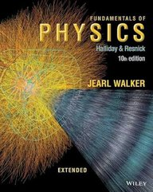
Fundamentals of Physics · Halliday, Resnick & Walker
If you're taking your first calculus-based physics class, this is the book. The first half covers motion, forces, energy, rotation, gravity, waves, and heat. The worked examples are clear, and the practice problems start easy and ramp up, so you never feel thrown into the deep end.
University Physics, Volume 1 · OpenStax
Can't get Halliday, or want a second explanation? This covers the same Physics I topics (mechanics, oscillations, waves, and sound) for free, with worked examples that show how to set up a problem and check your answer.
Physics II
Fundamentals of Physics · Halliday, Resnick & Walker
Same book, second half: electric fields, circuits, magnetism, light, and optics. You already know the style and notation from Physics I, so the only new thing to wrestle with is the physics.
University Physics, Volume 2 · OpenStax
The free version of Physics II: thermodynamics, electricity, and magnetism, in the same style as Volume 1. Great when a Halliday chapter isn't clicking and you want it explained a different way.
Mathematical Physics
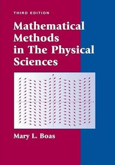
Mathematical Methods in the Physical Sciences · Mary L. BoasUndergrad
If this math is new to you, start here. Boas covers series, complex numbers, linear algebra, vector calculus, ODEs, Fourier series, special functions, PDEs, and probability. It's shorter and friendlier than Riley, and it reads like a patient tutor.
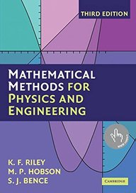
Mathematical Methods for Physics and Engineering · Riley, Hobson & BenceUndergrad
The book you'll keep on your shelf long after the class ends. It covers almost all the math a physics degree uses: vector calculus, series, ODEs, PDEs, complex variables, linear algebra, Fourier transforms, group theory, and tensors. It's huge, so use it as a reference, not a cover-to-cover read.
Modern Physics
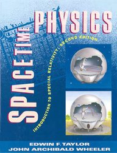
Spacetime Physics: Introduction to Special Relativity · Taylor & Wheeler
If relativity has always sounded intimidating, this book will change your mind, and you only need algebra. It covers spacetime diagrams, the spacetime interval, Lorentz transformations, and energy and momentum, all built from one idea: the interval that every observer agrees on. The authors even made it free.
University Physics, Volume 3 · OpenStax
Taylor & Wheeler only covers relativity, so use this for the quantum half of Modern Physics: photons and matter waves, intro quantum mechanics, atoms, condensed matter, nuclear physics, and particle physics and cosmology. It's free and written for students coming straight out of Physics I and II.
Statistical / Thermal Physics
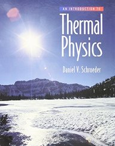
An Introduction to Thermal Physics · Daniel V. SchroederUndergrad
Free preview (Chapter 1)
Thermo is the class where a lot of people memorize equations without knowing where they come from. Schroeder fixes that. It covers energy, entropy, engines and refrigerators, free energy, Boltzmann statistics, quantum gases, and phase transitions, and it builds entropy by literally counting states, so you see why the laws of thermodynamics are true.
Classical Mechanics
Classical Mechanics · John R. TaylorUndergrad
Start here, especially if you're learning on your own. It covers oscillations, Lagrangian and Hamiltonian mechanics, central forces, and rigid bodies, plus chapters on chaos and continuum mechanics, and it's the easiest mechanics book on this list to actually read.
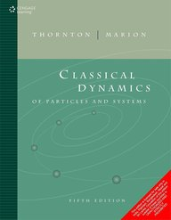
Classical Dynamics of Particles and Systems · Thornton & MarionUndergrad
Your upper-level mechanics course will probably use this one. It covers oscillations, gravitation, calculus of variations, Lagrangian and Hamiltonian mechanics, central forces, rigid bodies, and coupled oscillators. The problems are hard, but they're the kind that make the math finally stick.
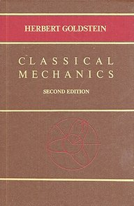
Classical Mechanics · Herbert GoldsteinGrad
For grad school, or seniors getting ready for it. It covers variational principles, rigid bodies, canonical transformations, Hamilton-Jacobi theory, and classical fields. Goldstein shows you the structure that quantum mechanics and field theory are built on, so a lot of later physics will feel familiar.
Electricity & Magnetism
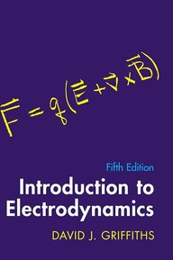
Introduction to Electrodynamics, 5th ed. · David J. GriffithsUndergrad
This is the textbook a lot of physics majors actually enjoy reading. It covers vector calculus, electrostatics, magnetostatics, fields in matter, Maxwell's equations, waves, radiation, and relativity, and it reads like a friendly professor talking you through every step.
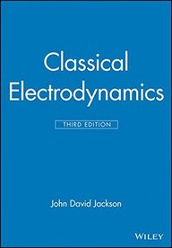
Classical Electrodynamics, 3rd ed. · J. D. JacksonGrad
The gold standard. Jackson is the encyclopedia of E&M, and the book first-year grad students famously wrestle with. It covers boundary-value problems, multipoles, waveguides, radiation, scattering, and relativistic electrodynamics, and it teaches hard math (Green's functions, special functions) by making you use it. Heads up: it switches from SI units to Gaussian units partway through.
Quantum Mechanics
Why spin first? Most courses use Griffiths' Introduction to Quantum Mechanics, which starts with wave functions. Spin-first books (McIntyre and Townsend) start with spin, where a measurement has only a few possible outcomes. That's a discrete basis, so a state is just a short list of numbers and the math is small matrices. Once those rules make sense, wave functions are the same idea with a continuous basis (every position is a possible outcome), and sums turn into integrals. Going from discrete to continuous is a lot more intuitive than learning both at once.
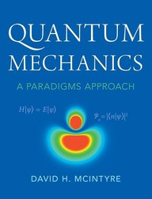
Quantum Mechanics: A Paradigms Approach · David H. McIntyreUndergrad
If you like seeing the experiment before the theory, start here. It opens with spin and Stern-Gerlach experiments, then covers wave mechanics, hydrogen, the harmonic oscillator, perturbation theory, and identical particles. You learn the core rules of quantum (states, measurement, Dirac notation) using nothing harder than 2×2 matrices.
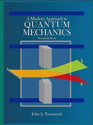
A Modern Approach to Quantum Mechanics · John S. TownsendUndergrad
A great bridge if you're thinking about grad school. Like McIntyre, it starts with spin and Dirac notation, then covers angular momentum, time evolution, wave mechanics, path integrals, and perturbation theory. It follows a path a lot like Sakurai's, just gentler, so Sakurai feels familiar when you get there.
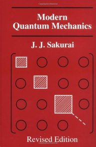
Modern Quantum Mechanics · J. J. SakuraiGrad
The standard grad quantum book. It covers Dirac formalism, symmetry, angular momentum, approximation methods, scattering, and identical particles. It's elegant and doesn't hold your hand, so it's best once you've worked through McIntyre or Townsend.
General Relativity
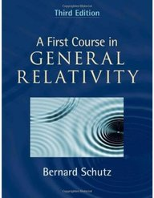
A First Course in General Relativity · Bernard SchutzUndergrad
Your first real look at general relativity, best once you know special relativity and linear algebra. It covers special relativity with tensors, curved spacetime, Einstein's equations, gravitational waves, black holes, and cosmology, and it teaches the differential geometry you need one step at a time, so you don't need a geometry course first.
Gravitation · Misner, Thorne & WheelerGrad
The giant black book. At over 1,200 pages, it's the encyclopedia of GR: geometry, stars, black holes, gravitational waves, cosmology, and experimental tests. Don't read it front to back. Its "Track 1 / Track 2" setup lets you skip the hardest parts on a first pass.
Quantum Field Theory
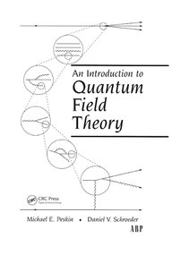
An Introduction to Quantum Field Theory · Peskin & SchroederGrad
When you need to actually calculate things in QFT, this is the book. It covers quantizing fields, Feynman rules, QED, renormalization, non-abelian gauge theory, and the Standard Model. It's the standard course text, and working its problems is how most people learn to compute in QFT.
Other resources
- The Feynman Lectures on Physics: all three volumes, free to read online from Caltech. They aren't just for freshmen and sophomores: Volume II (E&M) and Volume III (quantum) are worth rereading alongside upper-level courses, because Feynman explains why things work where most textbooks just show how.
- PhET Interactive Simulations: free physics labs in your browser from CU Boulder. They're useful at every level, not just intro courses: playing with a simulation for five minutes can make an upper-level topic like quantum tunneling or wave interference make sense in a way equations alone don't.
- Physics forums like Physics Forums and Physics Stack Exchange: when you're stuck on a concept, someone has probably asked the same question already. Search first, and if you post, show what you've tried. People are much more willing to help.
All links checked Oct 21, 2026. If one breaks, let me know.